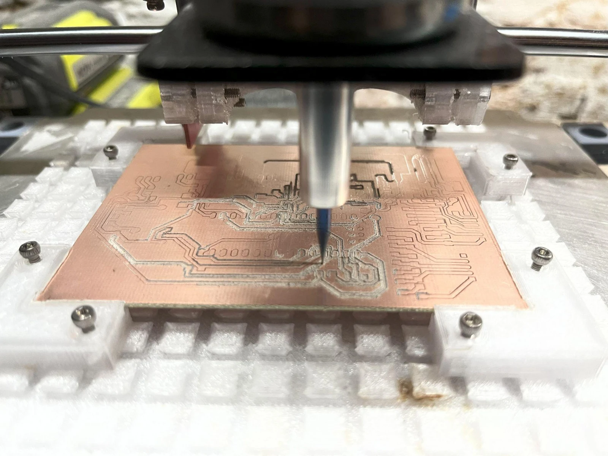

Budget e-bike conversion kit
Custom motor control, a printed hub motor, and a simple goal: make electric transportation more accessible.
I’m a third-year Mechanical Engineering student at Harvard College, Class of 2028. I build across mechanics, electronics, and software—from the first CAD sketch to the workbench.

FROM MY WORKBENCH / 01Custom motor control, a printed hub motor, and a simple goal: make electric transportation more accessible.
Building the tool behind the projects: a compact, 3D-printed machine for milling custom circuit boards.
A homemade steel-frame go-kart with electronic steering, remote control, and a custom starter-generator.